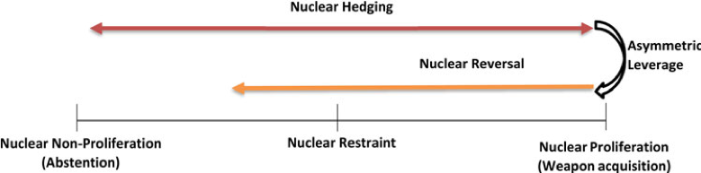

收录于合集

推荐语
在距离第一次朝美峰会近两年的今天，朝核问题谈判又一次陷入僵局，双方各执己见，近两年的努力依然看不到明显的成果。关于朝核问题，与朝鲜的谈判为何屡屡走入死局，朝鲜真正的谈判动机和转变核政策的原因究竟是什么？本文作者尝试通过对朝鲜在《朝美核框架协议》谈判和六方会谈期间朝鲜谈判立场变化和最近的核政策的案例研究寻找这些问题的答案。作者根据前景理论(prospect theory)的观点分析了核对冲国家(nuclear hedger)将其核政策转向遏制政策的条件。作者认为，当一个核对冲国家获得了相对于另一方的不对称筹码(asymmetric leverage)时，就会发生核政策转变。编者认为，本文对于科学性、理论性地研究朝核问题的谈判过程和结果及今后的朝核问题发展方向有相对重要的参考意义。
作品简介
【作者】 Soul Park：新加坡国立大学讲师
Kimberly Peh：就读于美国圣母大学
【编译】 李思（国政学人编译员，韩国首尔国立大学国际区域学硕士）
【校对】 柯孜凝
【审核】 姚寰宇
【排版】 高佳美
【来源】 Soul Park, Kimberly Peh. (2020). Leveraging towards restraint: Nuclear hedging and North Korea’s shifting reference points during the agreed framework and the Six-Party Talks. European Journal of International Security (2020), 5, 94–114

期刊介绍
《欧洲国际安全杂志》(European journal of International Security) 由剑桥大学出版社出版，所发表的论文涵盖国际安全的所有领域，包括：冲突与建设和平；战略与战争；环境和粮食安全；经济和能源安全等。本期刊着重于如何在不同学科和理论视角之间建立联系和桥梁，以及如何跨越地域边界。
走向核遏制的筹码：核对冲和朝鲜在框架协议与六方会谈中参考点的变化
Leveraging towards restraint: Nuclear hedging and North Korea’s shifting reference points during the agreed framework and the Six-Party Talks
Soul Park
文章导读
核扩散是一条充满各种代价和政治风险的道路。大多数核野心国家不仅没有获得核武器，甚至许多人在追求核武器的过程中付出了禁止性制裁的代价，或冒着军备竞赛的危险。为了减少这些代价，一些国家转向采取核对冲战略——一种维持发展核武器的预期时间和使用技术手段，来达到政治目的的战略。冷战后核不扩散体系面临的核心威胁来自朝鲜，这个渴望获得核武器的国家在过去20年里明确采用了一种对冲策略。那么核对冲国家在什么情况下会采取核遏制政策？在这篇文章中， 作者研究了核遏制的原因，并分析了它在国际体系中发生的过程。 作者认为， 一个核野心国家决定走向核逆转道路，或至少在获得不对称筹码（asymmetric leveraging）时，会暂时同意遏制其核政策。不对称筹码在两个相互关联的条件下发生：（1）当一个核对冲国家认为其对手付出相对较高的成本时；（2）如果达成协议，当对实现收益有信心时。 从前景理论的观点来看，作者认为，不对称的筹码会因为损失规避性而促进核遏制政策。一个希望将损失最小化的对冲国家，在其定义损失和收益的集合参考点发生变化时，在不对称筹码的联合条件下会遏制核武器发展，从保卫核计划转向保护这些潜在收益。 关键词： 核对冲；核遏制；不对称筹码；框架协议；六方会谈；朝鲜
01
核对冲与核扩散连续体
核对冲 是一种国家战略。在这种战略中，有核野心的国家基于本国的技术能力确保相对快速获得核武器的可行选择。该战略同样适用于那些尚未达到符合该国核态势的技术要求的国家。因此，根据有核野心的国家的技术情况，存在着各种对冲战略。该战略有技术上和政治上两个关键特点。第一个是 核潜伏期 ，即“基于一个国家在选择发展或放弃核武器的道路上所处的位置以及考虑到这个国家的动机和意图，一个无核国家开发一个常规运载核武器所需的预期时间”。第二个特点是一个国家可能会利用潜在的威胁来实现政治目标，也就是说， 核对冲是一种政治策略 。
对冲策略可以被用在研制一枚核弹的过程中，也可以被用在弃核进程的一部分，也可以作为一种保留选择重启已经暂停或放弃的核武项目的方式。各国在承诺采取核遏制措施的同时实施对冲战略的现象是很常见的，因为对冲可以起到控制风险或使谈判筹码最大化的作用，或同时起到两方面作用。在阐明了本文中关键概念的定义之后，作者同其他学者一样，对现有的核扩散的二元观点进行了分解，并将这三个概念重新概念化如下:

Figure 1. Nuclear proliferation continuum: Reconceptualisation.
表1: 核扩散连续体：再概念化
02
不对称筹码和核遏制
由于 不对称筹码 的作用， 核遏制 会发生在两个相互关联的条件下： （1）当一个核对冲国家认为其对手的代价大与自己；（2）当将其具体实现有信心获得收益时。 一旦参考点转向这些潜在收益，核对冲国家在损失范围内行动，随着其重心从捍卫其核武器计划转向保留成功协议的潜在收益，将使得规避损失核对冲国家走向核遏制的道路。对朝鲜来说， “特金会”意味着胜利。峰会在某种程度上使得金正恩认为“交流主要有利于他的政权”，种种迹象明确表明了这种明显的不对称性。
03
朝鲜案例研究
为了检验上面提到的不对称筹码理论，作者分析了后冷战时代1994年框架协议和六方会谈期间，朝鲜采取核遏制政策的条件。我们着重研究谈判过程以及导致平壤采取核遏制政策的因果关系。我们使用过程追踪(process- tracing)来推断和测试因果关系同时保持高水平的概念有效性。在此过程中，我们进一步阐述了在国际体系中采用核遏制行为的前因变量和必要条件。
3.1 1994年美朝核框架协议
导致第一次核危机的导火索是国际原子能机构针对朝鲜核开发情况的 “特殊检查”—认为朝鲜公布的核开发情况与他们所调查的不符。最终，平壤表达退出《不扩散核武器条约》的意愿，最终促使国际社会，尤其是美国与其进行正式的高层会谈。随着紧张局势持续加剧，克林顿最终批准了吉米•卡特（Jimmy Carter）访问朝鲜，讨论以和平方式解决当前的核危机。朝鲜有充分的理由相信，鉴于美国对朝鲜各种要求立场的改变，以及随之而来的既成事实的外交立场，谈判筹码已向有利于自己的方向移动。1994年10月，美国和朝鲜最终签署了一项重大协议——《框架协议》。一方面，朝鲜同意冻结宁边的钚生产设施，并允许国际原子能机构进行检查，以此来遏制核开发。另一方面，美国保证不对朝鲜使用核武器，在平壤建立外交代表，放松现有的经济制裁，并向朝鲜提供价值40亿美元的“防扩散”轻水反应堆和为期十年的重油供应。交易条款确认了非对称筹码的最终属性。只有在美国正式同意满足其核心和迫切的要求—平壤要求的经济援助和安全保证以及实现美朝关系正常化之后，朝鲜才正式采取核遏制政策。由于布什政府倾向于采取更强硬的政策，美朝关系由此更加恶化。朝鲜重新启用了宁边核设施，《框架协议》实际上于2000年初名存实亡了。
3.2 六方会谈
随着美国和朝鲜之间新的紧张局势迅速升级，中国在2003年年初组织了一次三方会谈，韩国、日本和俄罗斯随后加入谈判中来。2003年8月六方会谈一开始，美国就对朝鲜表现出毫不妥协的态度，美国高级官员在布什政府继续对朝鲜主张强硬政策。美国试图施加多边压力，通过制裁和相关措施来孤立、遏制和改造朝鲜。随着美国压力的加大，平壤方面在态度上保持了灵活性，并不断寻求让其对手付出更大代价的条款。由于双方无法缩小分歧，谈判陷入僵局。平壤通过参与六方会谈，同时继续进行核开发，继续其对冲的战略。第二年的第二轮谈判没有取得多大进展，华盛顿开始将其重点转向CVID问题(全面、可核查和不可逆转的拆除)，同时强化其底线的谈判立场。在第三轮谈判结束时，很明显，双方都在以最大限度的要求进行六方会谈。朝鲜要求得到安全保证和其它补偿措施以换取完全无核化，而美国则将CVID作为启动任何严肃讨论的先决条件。在第四轮会谈中，为了强调平壤早期的谈判立场，朝鲜代表继续主张其发展和平核力量的权利并坚持使用轻水反应堆的要求。几经周折，最终签署了“9·19共同声明”。在第五轮六方会谈中，朝鲜在谈判中采取了更加坚定的立场。例如，外交部发言人强调无核化指的是整个朝鲜半岛，而不只是朝鲜的无核化，并且强调上一轮的联合声明明确了一个原则立场：即通过邦交正常化实现无核化，而不是通过无核化实现邦交正常化（denuclearisation through the normalisation of relations, not the normalisation of relations through denuclearisation）。在最后关头敲定联合声明细节的努力最终以失败告终。在邦交正常化之前坚持去核化的主张让平壤方面很不满意。因此，朝鲜认为自己不受任何军备限制协定的约束，继续实施核对冲战略。随后，华盛顿终于接受了平壤提出的“按顺序采取行动”（ sequenced actions-for- actions）的要求，并表示愿意默认平壤提出的经济补偿的要求。根据2007年2月达成的北京协议，朝鲜宣布双方同意暂停宁边和泰川的核设施，并且美国提供给朝鲜相当于100万吨重油的能源。此外，朝鲜同意拆除重要的核设施。作为交换，华盛顿和平壤将继续进行双边会谈，并将成立五个工作组，以实施朝鲜半岛无核化、朝美关系正常化、朝日关系正常化、经济和能源合作以及东北亚和平与安全机制等计划。然而，双方在关于核查程序存在不同意见。因为朝鲜在经过几轮密集讨论后辩称：去功能化并不意味着废除，并拒绝任何书面的、有约束力的关于核查的承诺。平壤方面认为，拆除5兆反应堆冷却塔以及允许国际原子能机构核查人员重返宁边等显示出“善意”的举措并未得到回报。美国已经改变了最初的政策，要求加强核查机制来监督拆除过程，以换取将朝鲜从恐怖主义国家名单上去掉。很显然，平壤认为它在这个过程中受骗了，而且布什政府显然不愿意承担和平拆除的成本。至此，六方会谈已基本结束。下一届政府提出的继续进行多边对话的建议被拒绝了，因为金正日称新一届政府是敌对的，与布什政府没有区别。
04
**结论
**
与致力于实现核武化的政策一样，放弃核武的决定也是一件代价高昂、充满争议的事情，而且往往过程及其漫长。然而，核对冲国家在冷战后时期表现出了遏制其核政策的意愿。为了理解核野心国家接受不扩散条款的战略决策过程，我们根据前景理论的观点，概述了两个相互关联的必要条件。 首先，一个核对冲国家必须认识到，自己比另一方拥有更大的筹码。由于损失规避性，一个选择采取核对冲战略的国家对损失特别敏感，因此倾向于保持其最初的立场。因此，只有在其对手首先让步的情况下，才会偏离最初的核扩散的这一参考点。
第二个条件涉及核野心国家保持在逆转路径上的倾向。 有核野心的国家将在谈判中明确承诺遏制政策，并努力达成一项成功的协议，前提是其对手也同意屈从于其核心要求。只有满足了这些最低限度的条件，一个有和野心的国家才会改变其最初的参考点，并在核不扩散方面作出政策改变。 然而，继续走核逆转的道路并不一定排除继续采取对冲策略的可能性。相反，即使在核逆转的道路上，希望规避损失的国家也可以继续进行核对冲，因为他们将尽力弥补中间损失。
对朝鲜核政策的深入研究为我们的不对称筹码理论提供了支持。对朝核进程的进一步研究表明，朝鲜过去曾将其核政策转向核遏制。在1994年框架协议谈判过程中，平壤只有在美国正式同意满足核心和迫切需求的安全和经济上的保证和外交关系正常化的情况下才会同意遏制其核武器的计划。规避损失的对冲国家朝鲜只有在相对于另一方拥有不对称的筹码时，才会将其核政策从威慑转向遏制。此外，一旦它的参考点发生了变化，这个有核野心的国家就会明确地努力达成核协议，直到它觉得谈判的筹码已经消失。
作者的研究得出了三点理论和政策上的结论。首先， 对冲策略不一定会随着谈判的开始而终止 。正如我们的案例研究所表明的那样，即使在谈判期间也会继续出现采用对冲战略的情况。这意味着，人们不应指望朝鲜或任何其他有核野心的国家在整个谈判期间都能保持完全遏制。在特金会前夕，平壤方面通过其官方新闻机构继续批判美国的做法，并警告称不要将其和解姿态视为朝鲜软弱的表现，也不要将其视为愿意去核化的表现。然而，朝鲜一方面又同时表现出了核遏制的倾向。尽管仍有些模棱两可，但我们的理论解释也认为，只要美国不采取惩罚性行动并且仍然切实可行地实现朝鲜的目标，朝鲜就会持续采取遏制政策。
其次， 对冲策略与遏制政策在概念上的联系有助于我们更好地了解核扩散的整个过程，为决策者提供了一个全范围的选项，而不是像美国和国际社会在过去那样狭隘的强硬立场。 例如，最近有人指出，保障战略（reassurance strategy）是一种宝贵而独特的手段。通过这种手段，拥核国家可以向有核野心国家发出非侵略性意图的信号。我们的研究赞同这种说法，并且认为在核逆转框架内存在着各种保障战略。
最后， 与有核野心的国家的谈判应该被视为一个过程，而不是一个明确的结果。 因此，无论朝鲜是美国的威胁还是盟友，朝核问题的反转过程都很可能是漫长的。正如斯科特•斯奈德(Scott Snyder)所指出的，重启美朝核对话标志着一个进程的开始，而非高潮。
编者评述
对于朝鲜无核化的这项事业，首先很确定的一点是与朝鲜的谈判过程应该循序渐进，不应期待短期内会取得成果。正如文章中提到的，朝鲜问题的反转过程将是漫长的。其次，根据本文基于前景理论对于朝鲜核对冲策略的研究中可以得知，在与朝鲜的谈判过程中，由于不对称筹码的作用，只有当对方首先让步的情况下，朝鲜才会倾向于核遏制政策。而且，只有当对方满足其核心要求时，才有可能达成协议。自从2018年4月，第一次“特金会”举办以来，到去年2月的“河内会谈”破裂，距离特朗普和金正恩第一次在板门店会面已经过去两年的时间。在河内举行的第二次朝美峰会无果而终以后，朝核问题的谈判再一次陷入了僵局。朝美双方依然存在巨大意见分歧：美国坚持CVID原则（全面、可核查和不可逆转的拆除），而朝鲜更倾向于逐步式地拆除，并且要求前提是美国解除对朝鲜的经济制裁以及给予朝鲜经济补偿。最近，朝鲜方面再一次表示：除非美国同意朝鲜提出的全部要求，否则朝鲜不再和美国进行谈判。朝鲜方面认为，与美国进行的一年多的谈判是被美国欺骗的结果，而且是浪费时间。这一表现再一次证实了本文的研究结论。许多人质疑金正恩这一次重新坐上谈判桌的动机，以及有什么动力可以驱使金正恩彻底放弃朝鲜的核武器。对此，有三种可能的原因：第一，金正恩迫切地想将朝鲜经济从联合国严厉的制裁中解救出来；第二，金正恩更加坚信朝鲜成功研制出核武器是与美国对抗的最好筹码；第三，金正恩希望拖延时间，以逃避特朗普的敌对政策。在河内会谈中金正恩请求以拆除宁边核设施为代价换取美国解除制裁的行为证实了第一种可能。根据KOTRA的报告，与前一年对比，2017年朝鲜的贸易额下降了15%。另外，朝鲜坚信拥有核武器是对抗韩美同盟的强有力的威慑武器，并且拥有核武器可以帮助他巩固政权，也有助于从美韩方面获取巨大的经济补偿。因此，金正恩想要利用核武器作为筹码来换取美国的最大的经济补偿和安全保障。最后，自从2017年特朗普上台，美国就一直视朝鲜问题为最大的安全隐患。特朗普在2017年确实认真考虑过很多激烈的敌对政策，包括推倒金正恩政权、对朝鲜核设施和洲际弹道导弹基地发动预防性军事打击等。金正恩愿意重新谈判也有可能是为了拖延特朗普的这些可能的敌对政策。随着朝核问题已经被讨论了几十年却依然未能解决，对于中国、东亚甚至世界依然是极大的威胁。编者认为，解决朝核问题的最大前提是需要给予朝鲜完全弃核的动机并且鼓励朝鲜逐步地完成具体的漫长的拆除过程。在朝核问题上，韩国应充分地发挥媒介角色在美韩之间进行调停，使双方早日回到谈判的正轨上来。 参考文献： Edward Kwon. (2019). Denuclearization of North Korea: Before and After the Summits. 31(3), 309-328.
本文由国政学人独家编译推荐，文章观点不代表本平台观点，转载请联系授权。


好好学习，天天“在看”